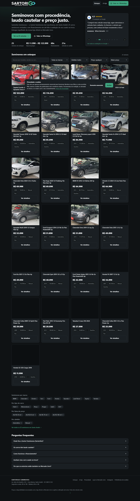

Sistema de Investigação de Marca e Identidade Online
https://sartorigo.com.br/
Prioridade: MEDIUM · Cenário: B_AMBIGUOUS_COMMUNICATION · Revisão humana: PENDING
Trata-se do site da loja de veículos seminovos 'SartoriGo Seminovos' (sartorigo.com.br), entidade dentro do escopo de potenciais correspondentes bancários (COBANs). Embora a loja utilize identidade visual própria e mencione a 'BV Financeira' apenas como um dos 'bancos parceiros' ao lado de outra instituição (C6 Bank) para financiamento em até 60x [E-DISC-001], o estabelecimento não exibe seu CNPJ, sua razão social nem a declaração de condição de correspondente bancário no site ou rodapé [E-FTR, E-DISC-001]. Nos termos das diretrizes de auditoria à luz da Resolução CMN nº 4.935/2021, a oferta de financiamento associada à marca sem identificação societária (CNPJ/razão social) e transparência de correspondente configura comunicação ambígua/incompleta (B_AMBIGUOUS_COMMUNICATION), demandando revisão (REVIEW_REQUIRED / prioridade MEDIUM). [Revisor: CONFIRM] Confirma-se a hipótese do analista. O domínio sartorigo.com.br pertence a uma loja comercial de veículos seminovos (SartoriGo Seminovos) que oferta financiamento em até 60x na página inicial (E-FOLD, E-SHOT-VIEWPORT) e divulga parceria de financiamento mencionando a 'BV Financeira' (E-DISC-001). Contudo, o site e seu rodapé (E-FTR, E-SHOT-FULL) apresentam apenas o nome fantasia e endereço físico, omitindo razão social, CNPJ, declaração de condição de correspondente no País e dados de ouvidoria exigidos pela Resolução CMN nº 4.935/2021. Assim, mantém-se a classificação REVIEW_REQUIRED com prioridade MEDIUM.

| Ref | Tipo | Local | Conteúdo |
|---|---|---|---|
| E-URL | domain | url | URL final: https://sartorigo.com.br/ (domínio: sartorigo.com.br) |
| E-DISC-001 | text | search_index | Índice de busca (grounding): sartorigo.com.br — **URL:** `https://sartorigo.com.br` | **Uso da Marca e Recursos:** Portal da loja *Sartori Seminovos* que divulga aprovação de crédito na loja ou via WhatsApp: *"Financiamos em até 60 vezes com bancos parceiros (C6 Bank, BV Financeira...)"* | **Conformidade (CNPJ / Razão Social / Declaração):** Utiliza apenas a nomenclatura comercial/fantasia na página, sem exibir de forma clara o CNPJ, a Razão Social e a condição de correspondente bancário |
| E-SHOT-VIEWPORT | screenshot | viewport | evidence\C84f87eb18f\attempt-1\viewport.png (sha256 151c2e189fafc33f…) |
| E-SHOT-FULL | screenshot | page | evidence\C84f87eb18f\attempt-1\fullpage.png (sha256 97ace9d33f25dab3…) |
| E-TITLE | title | head | SartoriGo Seminovos (Sartori) – Carros seminovos em Santo André com laudo cautelar |
| E-META-1 | meta | head | description: Sartori Seminovos (SartoriGo) em Santo André, Casa Branca: 25 carros seminovos revisados com laudo cautelar, financiamento em até 60x, entrada no cartão e troca. Estoque integrado à loja oficial no Mercado Livre. |
| E-META-2 | meta | head | og:site_name: SartoriGo Seminovos |
| E-META-3 | meta | head | og:title: SartoriGo Seminovos (Sartori) – Carros seminovos em Santo André com laudo cautelar |
| E-META-4 | meta | head | og:description: Sartori Seminovos (SartoriGo) em Santo André, Casa Branca: 25 carros seminovos revisados com laudo cautelar, financiamento em até 60x, entrada no cartão e troca. Estoque integrado à loja oficial no Mercado Livre. |
| E-CANONICAL | meta | head | https://sartorigo.com.br/ |
| E-HEAD-1 | heading | page | Seminovos com procedência, laudo cautelar e preço justo. |
| E-HEAD-2 | heading | page | Seminovos em estoque |
| E-HEAD-3 | heading | page | Toyota Corolla 2022 2.0 Xei Dynamic Force Flex Aut. 4p |
| E-HEAD-4 | heading | page | Fiat Toro 2021 2.0 Ultra 4x4 Aut. 4p(5ck (pintura Sólida)) 9 marchas |
| E-HEAD-5 | heading | page | BMW 220i Active Tourer 2018 2.0 Active Flex Aut. 4p |
| E-HEAD-6 | heading | page | Citroën C4 Cactus 2024 1.6 Feel Pack 16v Aut. 5p |
| E-HEAD-7 | heading | page | Hyundai Tucson 2018 1.6 Gl Turbo Gdi Aut. 5p |
| E-HEAD-8 | heading | page | Hyundai Santa Fe 2016 3.3 5l 4wd Aut. 5p |
| E-HEAD-9 | heading | page | Land Rover Discovery sport 2016 2.0 Si4 Se 5p |
| E-HEAD-10 | heading | page | Hyundai Santa Fe 2014 3.3 7l 4wd Aut. 5p |
| E-HEAD-11 | heading | page | Chevrolet Onix 2024 1.0 Lt Turbo 5p |
| E-HEAD-12 | heading | page | Fiat Argo 2020 1.8 Trekking 16v Flex Aut. 5p |
| E-HEAD-13 | heading | page | BMW X1 2012 3.0 Xdrive 28i 5p |
| E-HEAD-14 | heading | page | Citroën C3 2024 1.0 Live Pack Flex 5P |
| E-HEAD-15 | heading | page | Hyundai Hb20 2019 1.0 Unique Flex 5p |
| E-HDR | text | header | Estoque A loja Falar no WhatsApp |
| E-FOLD | text | viewport (acima da dobra) | Estoque A loja Falar no WhatsApp Seminovos com procedência, laudo cautelar e preço justo. SartoriGo Seminovos — a Sartori Seminovos da Casa Branca, em Santo André: 25 carros seminovos revisados, com financiamento em até 60x e avaliação do seu usado na troca. Estoque espelhado da nossa loja oficial no Mercado Livre. Ver os 25 veículos Falar no WhatsApp 25 veículos em estoque R$ 11.990 – R$ 122.890 faixa de preços 60x financiamento 21x entrada no cartão G 4,5 ★★★★★ 19 avaliações no Google “Empresa bem localizada na região, prestaram bom atendimento, vendedor Gelson cumpriu tudo o que foi combinado, parabéns.” ★★★★★ Bianca de Almeida 2026 ‹ › Ver todas as avaliações no Google → Seminovos em estoque 25 veículos Toyota Corolla 2022 2.0 Xei Dynamic Force Flex Aut. 4p R$ 122.890 Fiat Toro 2021 2.0 Ultra 4x4 Aut. 4p(5ck (pintura Sólida)) 9 marchas R$ 116.890 BMW 220i Active Tourer 2018 2.0 Active Flex Aut. 4p R$ 99.890 Citroën C4 Cactus 2024 1.6 Feel Pack 16v Aut. 5p R$ 94.890 Privacidade e cookies Este site usa apenas armazenamento essencial para funcionar (lembrar seus filtros e esta escolha). Não usamos cookies de publicidade nem vendemos dados. Ferramentas de medição, se ativadas no futuro, só rodam com o seu consentimento. Aviso de privacidade Somente essenciais Aceitar |
| E-FTR | text | footer | SARTORIGO SEMINOVOS Av. Artur de Queirós, 522 – Casa Branca, Santo André – SP, 09015-510 Segunda a sexta, 9h às 18h · Sábado, 8h às 14h Estoque A loja Privacidade Loja no Mercado Livre Instagram Preferências de cookies Preços e disponibilidade sincronizados com a loja oficial no Mercado Livre e sujeitos a alteração sem aviso. Fotos dos veículos reais. | |
| E-NAV | nav | header | SartoriGo Seminovos – página inicial <https://sartorigo.com.br/> | Estoque <https://sartorigo.com.br/#estoque> | A loja <https://sartorigo.com.br/contato> | Falar no WhatsApp <https://wa.me/551149774222?text=Ol%C3%A1!%20Vim%20pelo%20site%20sartorigo.com.br%20e%20gostaria%20de%20mais%20informa%C3%A7%C3%B5es.> |
| E-CTA-1 | cta | header | Falar no WhatsApp <https://wa.me/551149774222?text=Ol%C3%A1!%20Vim%20pelo%20site%20sartorigo.com.br%20e%20gostaria%20de%20mais%20informa%C3%A7%C3%B5es.> |
| E-CTA-2 | cta | page | Ver os 25 veículos <https://sartorigo.com.br/#estoque> |
| E-CTA-3 | cta | page | Falar no WhatsApp <https://wa.me/551149774222?text=Ol%C3%A1!%20Vim%20pelo%20site%20e%20gostaria%20de%20conhecer%20o%20estoque.> |
| E-CTA-4 | cta | page | ‹ |
| E-CTA-5 | cta | page | Avaliação 1 |
| E-CTA-6 | cta | page | Avaliação 2 |
| E-CTA-7 | cta | page | Avaliação 3 |
| E-CTA-8 | cta | page | Avaliação 4 |
| E-CTA-9 | cta | page | Avaliação 5 |
| E-CTA-10 | cta | page | Avaliação 6 |
| E-CTA-11 | cta | page | Avaliação 7 |
| E-CTA-12 | cta | page | Avaliação 8 |
| E-CTA-13 | cta | page | Avaliação 9 |
| E-CTA-14 | cta | page | › |
| E-CTA-15 | cta | footer | Preferências de cookies |
| E-CTA-16 | cta | page | Somente essenciais |
| E-CTA-17 | cta | page | Aceitar |
| E-CONTACT-1 | contact | header | Falar no WhatsApp <https://wa.me/551149774222?text=Ol%C3%A1!%20Vim%20pelo%20site%20sartorigo.com.br%20e%20gostaria%20de%20mais%20informa%C3%A7%C3%B5es.> |
| E-CONTACT-2 | contact | page | Falar no WhatsApp <https://wa.me/551149774222?text=Ol%C3%A1!%20Vim%20pelo%20site%20e%20gostaria%20de%20conhecer%20o%20estoque.> |
| E-CONTACT-3 | contact | footer | Instagram <https://instagram.com/sartorigo.seminovos> |
| E-IMG-1 | image | header (acima da dobra) | imagem alt='SartoriGo Seminovos – Compra e venda de veículos em Santo André' src=https://sartorigo.com.br/logo.png (233x44, acima da dobra) |
| E-TXT-001 | text | page | |
| E-TXT-002 | text | page | SartoriGo Seminovos — a Sartori Seminovos da Casa Branca, em Santo André: 25 carros seminovos revisados, com financiamento em até 60x e avaliação do seu usado na troca. Estoque espelhado da nossa loja oficial no Mercado Livre. |
| E-TXT-003 | text | page | Falar no WhatsApp |
| E-TXT-004 | text | page | “Empresa bem localizada na região, prestaram bom atendimento, vendedor Gelson cumpriu tudo o que foi combinado, parabéns.” |
| E-TXT-005 | text | page | Preços e disponibilidade sincronizados com a loja oficial no Mercado Livre e sujeitos a alteração sem aviso. Fotos dos veículos reais. |
| Dimensão | Sinal | Achado | Refs |
|---|---|---|---|
| VISUAL_IDENTITY | LEGITIMATE | O site utiliza identidade visual própria da loja de veículos (SartoriGo Seminovos), em tons de verde-escuro e verde-água, sem imitar o layout ou paleta do Banco BV. | E-SHOT-VIEWPORT E-SHOT-FULL E-IMG-1 |
| DECLARED_COMMERCIAL_IDENTITY | CONFUSION | Embora apresente nome fantasia ('SartoriGo Seminovos') e endereço físico em Santo André/SP, a loja não exibe razão social nem CNPJ em nenhuma área visível ou no rodapé da página. | E-TITLE E-FTR E-DISC-001 |
| CORRESPONDENT_TRANSPARENCY | CONFUSION | O estabelecimento oferta financiamento de veículos em até 60x mencionando 'bancos parceiros (C6 Bank, BV Financeira...)' no conteúdo indexado, mas não apresenta aviso de correspondente bancário nem dados de ouvidoria. | E-DISC-001 E-FOLD E-FTR |
| INSTITUTIONAL_LANGUAGE | LEGITIMATE | A linguagem é própria de uma revenda de veículos seminovos; a expressão 'loja oficial' refere-se apenas à integração de estoque com a loja da revenda no Mercado Livre. | E-META-1 E-TXT-002 E-TXT-005 |
| LOGO_USAGE | LEGITIMATE | Não há uso de logotipos do Banco BV ou da BV Financeira nas imagens e áreas visíveis da página inspecionada. | E-SHOT-VIEWPORT E-SHOT-FULL E-IMG-1 |
| SERVICE_JOURNEY | NEUTRAL | A jornada principal é voltada à exibição de estoque de veículos e direcionamento para atendimento via WhatsApp. | E-FOLD E-CTA-1 E-CTA-3 |
| CONTACT_CHANNELS | NEUTRAL | São disponibilizados links de WhatsApp, perfil do Instagram e endereço físico da loja em Santo André/SP, sem canais de ouvidoria bancária. | E-CONTACT-1 E-CONTACT-3 E-FTR |
| CONSUMER_CONFUSION | NEUTRAL | Baixo risco de o consumidor confundir a página com um canal oficial do Banco BV, mas há falha de transparência regulatória na identificação societária do lojista/correspondente. | E-SHOT-VIEWPORT E-DISC-001 E-FTR |
Trata-se do site da loja de veículos seminovos 'SartoriGo Seminovos' (sartorigo.com.br), entidade dentro do escopo de potenciais correspondentes bancários (COBANs). Embora a loja utilize identidade visual própria e mencione a 'BV Financeira' apenas como um dos 'bancos parceiros' ao lado de outra instituição (C6 Bank) para financiamento em até 60x [E-DISC-001], o estabelecimento não exibe seu CNPJ, sua razão social nem a declaração de condição de correspondente bancário no site ou rodapé [E-FTR, E-DISC-001]. Nos termos das diretrizes de auditoria à luz da Resolução CMN nº 4.935/2021, a oferta de financiamento associada à marca sem identificação societária (CNPJ/razão social) e transparência de correspondente configura comunicação ambígua/incompleta (B_AMBIGUOUS_COMMUNICATION), demandando revisão (REVIEW_REQUIRED / prioridade MEDIUM).
Nenhum CNPJ ou razão social identificáveis no conteúdo coletado.
| Tipo | Valor | Ref | Contexto |
|---|---|---|---|
| domain | sartorigo.com.br | E-URL | |
| social_profile | https://instagram.com/sartorigo.seminovos | E-CONTACT-3 | |
| trade_name | SartoriGo Seminovos | E-META-2 | |
| Índice de busca (grounding): sartorigo.com.br — **URL:** `https://sartorigo.com.br` | **Uso da Marca e Recursos:** Portal da loja *Sartori Seminovos* que divulga aprovação de crédito na loja ou via Wh | E-DISC-001 | ||
| Falar no WhatsApp <https://wa.me/551149774222?text=Ol%C3%A1!%20Vim%20pelo%20site%20sartorigo.com.br%20e%20gostaria%20de%20mais%20informa%C3%A7%C3%B5es.> | E-CONTACT-1 | ||
| Falar no WhatsApp <https://wa.me/551149774222?text=Ol%C3%A1!%20Vim%20pelo%20site%20e%20gostaria%20de%20conhecer%20o%20estoque.> | E-CONTACT-2 | ||
| partnership_declaration | bancos parceiros | E-DISC-001 | **Uso da Marca e Recursos:** Portal da loja *Sartori Seminovos* que divulga aprovação de crédito na loja ou via WhatsApp: *"Financiamos em até 60 vezes com bancos parceiros (C6 Bank, BV Financeira...) |
Mapeamento indicativo para apoio à auditoria. Não constitui conclusão regulatória; a decisão definitiva pertence à auditoria.
Fonte: NORMATIVE
Art. 14. O contrato de correspondente deve estabelecer: [...] II - vedação à utilização, pelo contratado, de logomarca ou de outros atributos que sejam similares aos adotados pela instituição contratante em suas agências, postos de atendimento, sítio eletrônico na internet, aplicativo ou outras plataformas de comunicação em rede;
Evidência observada: E-IMG-1 E-SHOT-FULL E-SHOT-VIEWPORT
Fonte: NORMATIVE
Art. 14. O contrato de correspondente deve estabelecer: [...] III - divulgação ao público, pelo contratado, de sua condição de prestador de serviços à instituição contratante, identificada pelo nome com que é conhecida no mercado, com descrição dos produtos e serviços oferecidos e canais de contato da instituição contratante, inclusive de sua ouvidoria, em local visível, em destaque e em formato legível, por meio de: a) sítio eletrônico do correspondente na internet, acessível na página inicial; b) aplicativo e outras plataformas de comunicação em rede do correspondente; [...]
Hipótese: Divulgação ao público da condição de prestador de serviços à contratante ausente, insuficiente ou sem destaque. A norma disciplina correspondentes contratados; o responsável não foi identificado como correspondente.
Evidência observada: E-DISC-001 E-FOLD E-FTR E-SHOT-FULL E-TITLE
Informação faltante:
Fonte: NORMATIVE
Art. 3º O correspondente atua por conta e sob as diretrizes da instituição contratante, que assume inteira responsabilidade pelo atendimento prestado aos clientes e usuários por meio do contratado.
Evidência observada: —
Se o responsável não for correspondente contratado, os indícios podem caracterizar uso indevido de marca ou fraude, fora do escopo da Res. 4.935: avaliar encaminhamento às áreas jurídica/segurança.
Limitações: requisitos contratuais/internos não fornecidos: mapeamento limitado ao texto normativo
Decisão: CONFIRM → REVIEW_REQUIRED / MEDIUM
Confirma-se a hipótese do analista. O domínio sartorigo.com.br pertence a uma loja comercial de veículos seminovos (SartoriGo Seminovos) que oferta financiamento em até 60x na página inicial (E-FOLD, E-SHOT-VIEWPORT) e divulga parceria de financiamento mencionando a 'BV Financeira' (E-DISC-001). Contudo, o site e seu rodapé (E-FTR, E-SHOT-FULL) apresentam apenas o nome fantasia e endereço físico, omitindo razão social, CNPJ, declaração de condição de correspondente no País e dados de ouvidoria exigidos pela Resolução CMN nº 4.935/2021. Assim, mantém-se a classificação REVIEW_REQUIRED com prioridade MEDIUM.
| Tema | Severidade | Questionamento | Refs |
|---|---|---|---|
| Visibilidade da menção à marca na captura estática | LOW | A citação explícita à 'BV Financeira' consta no índice de busca (E-DISC-001), provavelmente associada ao item recolhido 'Como funciona o financiamento?' na seção de Perguntas Frequentes visível em E-SHOT-FULL, sem exibição direta no texto expandido inicialmente. | E-DISC-001 E-SHOT-FULL |
| domain_attribution | MEDIUM | Responsável pela página não identificado; a conclusão sobre a marca não pode ser atribuída a um estabelecimento específico. | E-URL |
| Fonte | Consulta / hipótese | URL original | Título / trecho |
|---|---|---|---|
| grounding | Objetivo: Revendas de seminovos e lojas multimarcas que divulgam financiamento da marca.
Execute no Google Search as seguintes consultas (dorks):
- "Banco BV" financiamento (loja OR revenda OR seminovos OR multimarcas) veículos -site:bv.com.br -site:bancobv.com.br -site:bvfinanceira.com.br -site:bvinvestimentos.com.br -site:napista.com.br -site:bvopen.com.br -site:meufinanciamentosolar.com.br -site:votorantim.com.br -site:vam.com.br -site:reclameaqui.com.br -site:jusbrasil.com.br -site:jus.br -site:weebly.com -site:site123.me
- "bv financeira" (seminovos OR multimarcas OR revenda) financiamento -site:bv.com.br -site:bancobv.com.br -site:bvfinanceira.com.br -site:bvinvestimentos.com.br -site:napista.com.br -site:bvopen.com.br -site:meufinanciamentosolar.com.br -site:votorantim.com.br -site:vam.com.br -site:reclameaqui.com.br -site:jusbrasil.com.br -site:jus.br -site:weebly.com -site:site123.me
- ("financiamos" OR "trabalhamos com" OR "financie") ("bv financeira" OR "Banco BV") veículos -site:bv.com.br -site:bancobv.com.br -site:bvfinanceira.com.br -site:bvinvestimentos.com.br -site:napista.com.br -site:bvopen.com.br -site:meufinanciamentosolar.com.br -site:votorantim.com.br -site:vam.com.br -site:reclameaqui.com.br -site:jusbrasil.com.br -site:jus.br -site:weebly.com -site:site123.me
Liste de forma abrangente as páginas públicas encontradas (até 12 resultados distintos), informando para cada uma o nome do estabelecimento/perfil, a URL e como a marca é utilizada (destaque visual, título, feirão, simulador, redes sociais e se há ou não identificação clara de CNPJ e condição de correspondente bancário). H2-product:financiamento de carro e multimarcas | https://sartorigo.com.br/ | sartorigo.com.br **URL:** `https://sartorigo.com.br` | **Uso da Marca e Recursos:** Portal da loja *Sartori Seminovos* que divulga aprovação de crédito na loja ou via WhatsApp: *"Financiamos em até 60 vezes com bancos parceiros (C6 Bank, BV Financeira...)"* | **Conformidade (CNPJ / Razão Social / Declaração):** Utiliza apenas a nomenclatura comercial/fantasia na página, sem exibir de forma clara o CNPJ, a Razão Social e a condição de correspondente bancário |
Original: https://sartorigo.com.br/
Final: https://sartorigo.com.br/
| Artefato | Caminho | SHA-256 | Bytes |
|---|---|---|---|
| screenshot_viewport | evidence\C84f87eb18f\attempt-1\viewport.png | 151c2e189fafc33fc656c866286eaa77a88a2dd5cc6bff7be7b8e6ead77d8f63 | 459274 |
| screenshot_full | evidence\C84f87eb18f\attempt-1\fullpage.png | 97ace9d33f25dab3ebdb750443e6467d311c61d13f1dea7099f704a28e99a9a6 | 1449832 |
| html | evidence\C84f87eb18f\attempt-1\page.html.txt | f1d73b93e2b3404c95672380225027820410f48f7a61a7126536edae31f17240 | 63147 |
| text | evidence\C84f87eb18f\attempt-1\text.txt | 5138301360693fdd4cc9ab46e91567897faf3494de914f9304435cf364025da4 | 4610 |
| page_data | evidence\C84f87eb18f\attempt-1\page.json | 6d936bec65bdf8668722e1728290ea846b7e022704a1adf12e86d0a36bdf02f9 | 29247 |
| Quando | De | Para | Nota |
|---|---|---|---|
| 2026-11-23T14:17:58+00:00 | DISCOVERED | QUEUED | prioritised (score 1.5) |
| 2026-11-23T14:40:13+00:00 | QUEUED | COLLECTING | |
| 2026-11-23T14:40:24+00:00 | COLLECTING | COLLECTED | |
| 2026-11-23T14:40:24+00:00 | COLLECTED | ANALYZING | |
| 2026-11-23T14:41:05+00:00 | ANALYZING | REVIEWING | |
| 2026-11-23T14:41:39+00:00 | REVIEWING | COMPLETED |